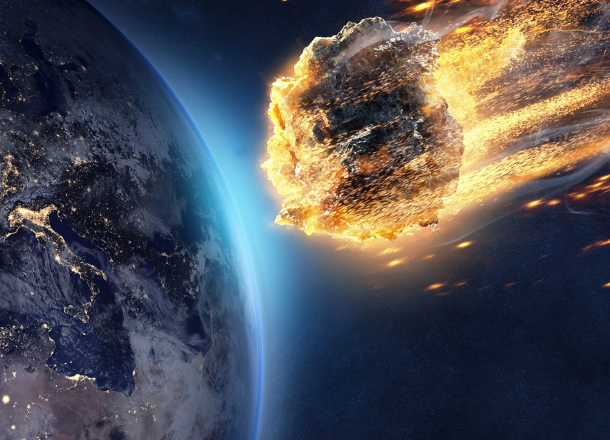
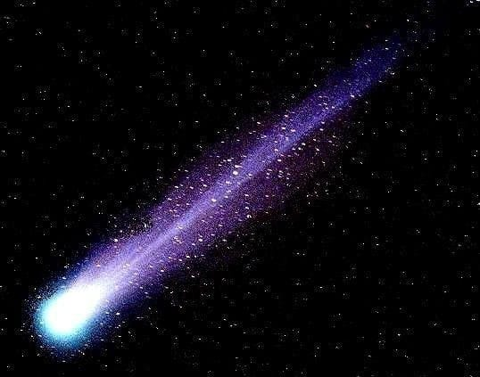
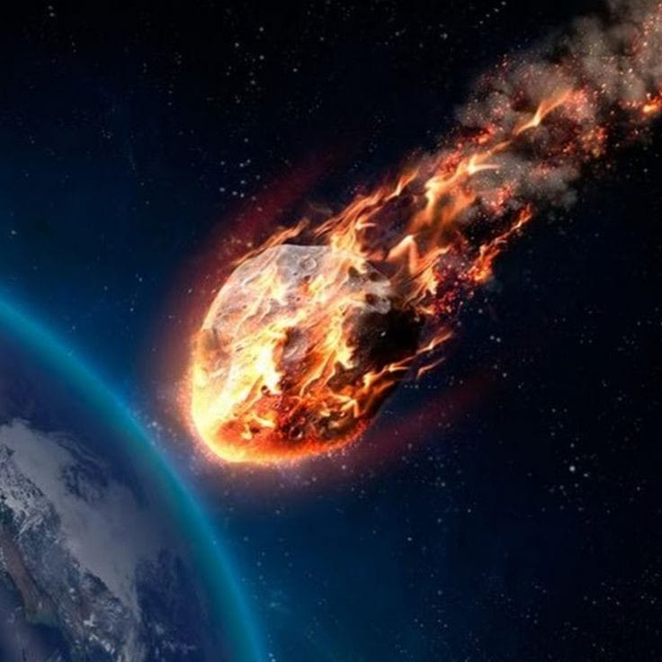

Restos Rocosos
Los restos rocosos son fragmentos de roca y hielo que quedaron de la formación del Sistema Solar.
Tipos de Restos Rocosos
- Asteroides
- Cometas
- Meteoroides
Asteroides
Los asteroides son cuerpos rocosos que orbitan alrededor del Sol.
Son restos de la formación del sistema solar hace unos 4.600 millones de años.
Cometas
Los cometas son cuerpos celestes que orbitan el Sol y están compuestos de hielo, polvo, rocas y otros elementos.
Son restos de la formación del Sistema Solar, hace unos 4.600 millones de años.
Meteoritos
Un meteorito es un meteoroide que sobrevive a su paso por la atmósfera y alcanza la superficie de un planeta, a diferencia de un meteoro que es la luminosidad que deja al desintegrarse.
Los meteoritos provienen de asteroides y cometas.
